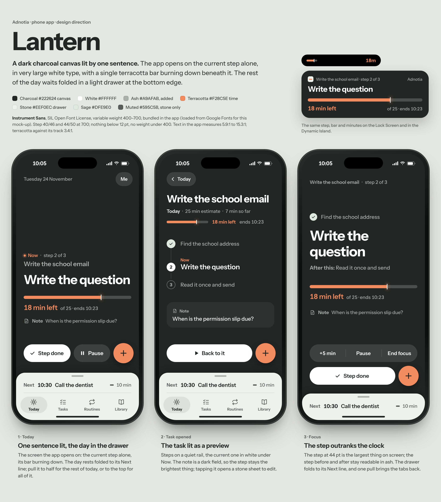

1
Lantern
A dark charcoal canvas lit by one sentence. The app opens on the current step alone, in very large white type, with a single terracotta bar burning down beneath it. The rest of the day waits folded in a light drawer at the bottom edge.
